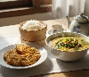
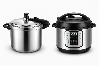
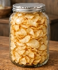

Selamat datang!
Situs ini menyajikan tips-tips, resep masakan, jajanan, minuman, dan info seputar kuliner yang unik dan lezat.

Sayur asem biasanya dikenal sebagai masakan rumahan yang sederhana. Tapi sebenarnya, dengan sedikit kreativitas, sayur asem bisa dibuat lebih unik, segar, dan menarik tanpa menghilangkan cita rasa tradisionalnya.
🥬 Resep Sayur Asem Bening Green Tomato
🛒 Bahan-bahan:- 1 buah jagung manis, potong-potong ...
Siapa yang tidak tergoda dengan semangkuk ayam berkuah hangat? Mulai dari soto ayam, opor, gulai, hingga sup ayam, hidangan ini selalu jadi andalan di meja makan. Namun, seringkali kita kecewa karena hasil masakan justru aromanya kurang tajam, beraroma aneh atau terasa terlalu berat.
Nah, jika Anda mengalami masalah serupa, jangan khawatir! Ada rahasia sederhana yang bisa Anda coba. Tidak perlu bahan-bahan mahal, cukup terapkan langkah-langkah berikut ini.
...
Apakah Anda ingin bisa menasak daging super empuk dalam waktu singkat? Jika iya, panci presto (pressure cooker) akan menjadi andalan di dapur Anda.
Alat masak ini memang terkenal bisa memangkas waktu memasak hingga 70%. Namun, di balik kepraktisannya, ada hal yang menakutkan tentang panci presto.
Lalu, apa saja sebenarnya manfaat, resiko-resiko, dan alternatif lain untuk panci presto ini? Mari kita bahas tuntas!

Resep Keripik Singkong Original Renyah
Anda bisa membuat keripik singkong dengan cara di iris tipis dan langsung digoreng, namun hasilnya tidak selalu renyah. Untuk mendapatkan hasil yang renyah, lakukanlah beberapa cara berikut:
- Pengirisan yang tipis dan seragam.
- Menggorengnya sedikit demi sedikit.
- Harus menggunakan minyak kemasan yang bagus.
Berikut adalah daftar artikel masakan, resep masak, hidangan, minuman, snack, atau hidangan penutup, beberapa diantaranya bisa Anda coba sendiri dirumah: